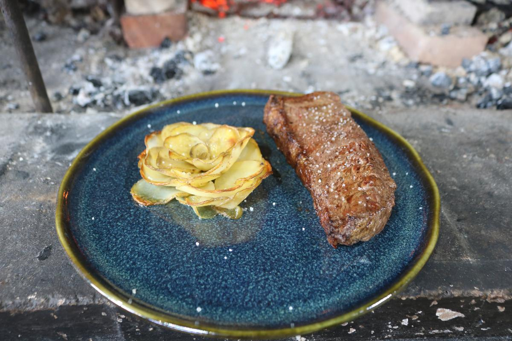
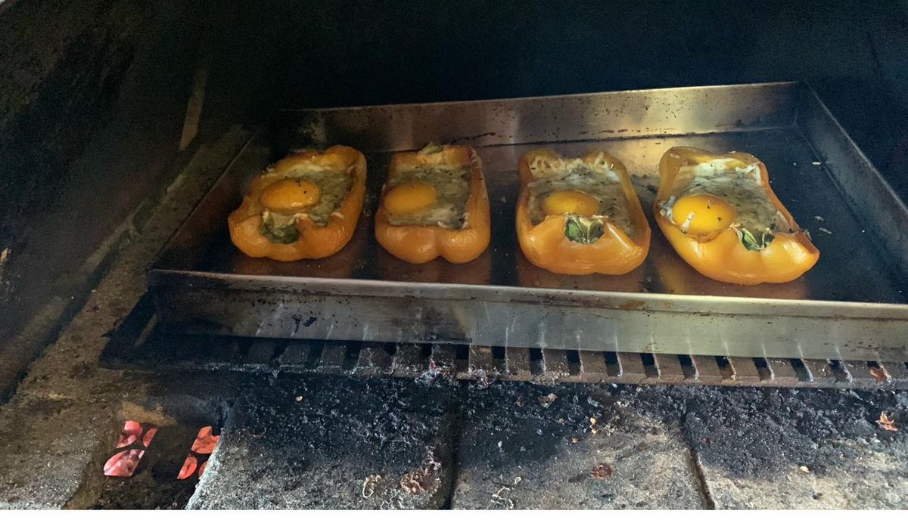
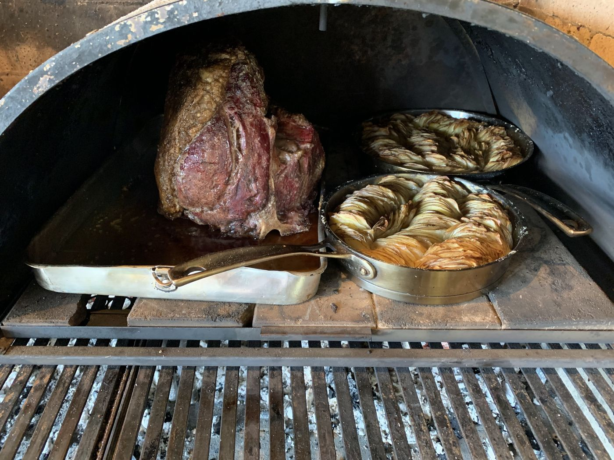

Parrilla de lenha com
vista panorâmica
O almoço de domingo na Seriemas Parrilla é o tipo de refeição que transforma o dia. Braseiro real, cortes selecionados que descansam no calor certo, costelinha defumada de 6 horas e a batata seriema — receita da casa que virou assinatura.
De acompanhamento: legumes grelhados no forno a lenha, farofa de pão, saladas frescas, queijo fresco artesanal e pão de fermentação natural — ambos feitos na propriedade. Vinhos selecionados, cervejas artesanais e sucos naturais completam a mesa. Veja o cardápio completo da parrilla com cortes, valores e acompanhamentos.
Tudo servido a 990 metros de altitude, com vista aberta para o vale da Serra do Itaqueri. O restaurante fica dentro do Recanto das Seriemas, na região de São Pedro, a 35 km de Brotas e 15 km do Patrimônio — no Distrito Turístico Águas e Aventuras.




Funcionamento: sábados e domingos, das 12h às 16h.
Reservas antecipadas recomendadas — o restaurante costuma lotar, especialmente aos domingos.